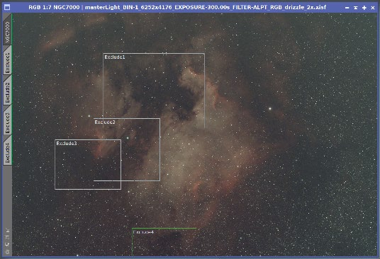

1 Description
[hide]
Part 2 of the Space Hunter Lazy Workflow continues where SH Lazy Workflow Part 1 ends. Start it on the image after you have applied your chosen background extraction.
It corrects the optics, calibrates colour, sharpens and removes the stars. At the end the starless image is in front with NoiseXTerminator (or MLDenoise) open, and your creative work can begin.
Part 2 sequence: BXT correct → Find Background → SPCC (or AutoColor) → Adaptive Auto STF → BXT full → SXT (or StarNet2) → NXT (or MLDenoise).
2 Usage
[hide]
2.1 The Dialog
Each workflow step is a collapsible section with a checkbox.
2.2 Step 1 — BXT Correct Only
Runs BlurXTerminator in correction-only mode: no sharpening, only correction of optical aberrations, so the stars are clean before colour calibration. ML Version (default: latest) and Tile Overlap are set separately from BXT full. Skipped if BlurXTerminator isn't installed.
2.3 Step 2 — Find Background
Finds a clean, typical patch of sky and marks it with a preview named Background. SPCC uses it as its background reference, and Adaptive Auto STF takes its statistics from it.
How the search works. The frame, minus a 3% border, is cut into square tiles (5% of the image height, at most 50 px). For every tile the script measures the median, the noise and how much stars or galaxies lift the mean above the median; star-rich tiles are rejected. It then looks for tiles at the typical sky level (10th percentile of the clean tiles), not the darkest ones: the darkest tiles are usually dark nebulae or over-corrected holes. Among those, the flattest tile that matches its surroundings and isn't near the edge wins.
So the finder avoids dark nebulae on its own. Faint IFN (integrated flux nebula) or galactic cirrus can still pull the pick. For that there are the pre-check, the dust map and exclusion zones.
2.3.1 Background Pre-check
Before anything is processed, the Background Pre-check window lists the previews in the image:
- Exclude previews are used as exclusion zones. A warning appears if one covers more than half the image (a leftover?).
- Other previews are not used and will be deleted. If one was meant as an exclusion zone, click Cancel, rename it to start with Exclude (case-sensitive) and run again.
The window is skipped when the image already has only sensible Exclude previews.
Check dust map (optional, internet required) uses the image's astrometric solution to query the NASA/IPAC IRSA dust service (Schlegel, Finkbeiner and Davis 1998 map) [1]. It shows where in the frame dust or IFN is expected: the expected IFN level, the dustiest and clearest areas, their contrast, and the Galactic latitude. The thresholds are rules of thumb, not hard limits; near the Milky Way plane the map is less reliable. If the service doesn't answer within 30 seconds, the window says so; you can still click Continue without the map.
-
Use dust map in the background pick
-
The dustier half of the tiles is set aside and the rest are scored by dust. It is pre-checked only when the map shows clear contrast (1.15× or more), real dust, and a Galactic latitude of at least 10°.
-
Don't show this pre-check again
-
Turns the pre-check off. Turn it back on with Show background pre-check before processing under Find Background.
-
Cancel
-
Stops the script, for example to add an Exclude preview over cirrus the map points to.
-
Continue
-
Starts the workflow.
2.3.2 Exclusion Zones

Exclusion zones are optional. To keep the search away from an area:
- Draw a preview over each area to exclude (IFN, cirrus, a dark nebula).
- Rename each one so it starts with Exclude (Exclude1, Exclude2, ...). NamePreviews does this for you.
- Run Part 2.
After the search, all previews are deleted (the Exclude previews and any leftovers such as Part 1's BM_ previews) and only Background remains. If the search fails, your Exclude previews are kept.
2.4 Step 3 — SPCC (SpectrophotometricColorCalibration)
Calibrates the colour balance by matching catalogue star spectra, with the White Reference, Camera / Sensor and Filter selected in the dialog and the Background preview as background reference. Generate graphs lets SPCC show its graphs.
For a dual-band filter, check Narrowband filters mode and enter wavelength and bandwidth (nm), as in Part 1 ([1]).
SPCC needs the astrometric solution from Part 1. Without it, solve the image with ImageSolver first.
2.5 Step 4 — AutoColor
Off by default. An alternative to Find Background and SPCC: background neutralization and colour calibration in one step, without catalogue stars or an astrometric solution. It uses the method of Hartmut V. Bornemann's AutoColor script [2], built into Part 2 with his written permission. AutoColor is fully integrated: you don't need to install or load the AutoColor script separately (see Requirements).
2.6 Step 5 — Adaptive Auto STF
Applies an automatic screen stretch to the linear image so you can judge the colour calibration. It is a display stretch only: pixel data are not changed.
It uses the method of PixInsight's AutoSTF (Juan Conejero, Pleiades Astrophoto) in its own implementation:
- Statistics from the sky: measured in the Background preview (the whole image if there is none). With sky-only noise the black point sits close to the sky, which gives the nebula more depth.
- Target background 0.225 (PixInsight's default is 0.25).
- Linked or unlinked, chosen automatically: linked after SPCC, to keep SPCC's colour balance; otherwise linked when the channels' background levels are close, unlinked when they are not.
2.7 Step 6 — BXT Full
The main deconvolution and sharpening pass, with the settings from the dialog: ML Version, Sharpen Stars, Adjust Star Halos, Sharpen Nonstellar, PSF Diameter and Tile Overlap. Skipped if BlurXTerminator isn't installed.
PSF Diameter is only used when Automatic PSF is unchecked. Measure the value before you run the script, for example with DynamicPSF or the PSFImage script.
2.8 Step 7 — SXT (StarXTerminator)
Removes the stars. Options: ML Version, Generate Star Image, Unscreen Stars and Tile Overlap. With Generate Star Image, a star-only image named stars is created and the starless image is brought to front. If StarXTerminator isn't installed, the script uses StarNet2.
2.9 Step 8 — StarNet2
Off by default. Options: Stride, Create starmask, 2x upsample and Linear data. With Create starmask, a star-only image named stars is created and the starless image is brought to front. Install StarNet2 from its PixInsight repository, https://pixinsight.starnetastro.com/.
2.10 Step 9 — NXT (NoiseXTerminator)
Opens NoiseXTerminator at the end of the workflow; it is not applied automatically. With the starless image active, drag the instance triangle from the NXT dialog onto the image. Skipped if NoiseXTerminator isn't installed.
2.11 Step 10 — MLDenoise
Off by default. An alternative to NXT: opens MLDenoise with the model file (.xmlm) selected in the dialog. Other settings use MLDenoise's own defaults; adjust them in the tool, then drag the instance triangle onto the image.
2.12 Notes
The script marks each step on the image as it runs. If you start it again on an image that already went through Part 2, it warns you: running the same steps twice alters or damages the image data. The marks follow History Explorer (undo a step and its mark is gone) and are kept when you save and reopen the image.
3 Requirements and License
[hide]
3.1 Requirements
Both parts
- Windows operating system.
- PixInsight 1.9.5 or later.
- An image from a one-shot colour (OSC) camera, captured with a broadband, light-pollution or single dual-narrowband (DNB) filter. The RGB channels are not split into separate greyscale images.
- An image that is already cropped. If you stack in WBPP with Auto Crop and Astrometric Solution enabled, you can start without cropping and the plate solve step is skipped.
Part 1
- The MARS database (any drive).
- ASTAP with the D50 star database, preferably in C:\Program Files\astap.
Part 2
- BlurXTerminator, StarXTerminator and NoiseXTerminator.
- Optional: StarNet2, installed from its PixInsight repository.
- Optional: MLDenoise and its model file (.xmlm), saved on this computer. They are available only to licensed PixInsight users: log in on pixinsight.com with your license to download them.
- AutoColor is fully integrated into Part 2. You don't need to install or load the AutoColor script separately. (The stand-alone AutoColor V8 script is in the MOP V8 scripts repository, if you want to use it on its own.)
- Internet access only if you use Check dust map in the background pre-check.
If the scripts can't find the MARS database or ASTAP the first time they run, they ask you to locate it. The path is saved for later runs. If BlurXTerminator or NoiseXTerminator isn't installed, that step is skipped. If StarXTerminator isn't installed, Part 2 uses StarNet2 instead.
If you combine two DNB filters (Ha/OIII and SII/OIII) into a Hubble-palette image, these scripts are not the right tool.
3.2 The Button Bar

The buttons at the bottom of the dialog, from left to right:
-
New Instance
-
Drag the triangle onto the workspace to save the current settings as a process icon.
-
User Guide
-
Opens the user guide.
-
Deselect All
-
Clears every workflow step.
-
Reset Workflow
-
Returns the workflow steps to their defaults. Equipment settings are not changed.
-
Reset Settings
-
(gear) Returns the equipment settings (camera, filters, white reference, gradient scales) to their defaults. Workflow steps are not changed.
All workflow and equipment settings are saved when you run the script and come back the next time you open it.
3.3 License
Both scripts are released under the MIT License, Copyright © 2026 Georg G. Albrecht. You may use, modify and redistribute them. Exception: the AutoColor code in Part 2 (© 2016 Hartmut V. Bornemann, used with written permission) must be kept in its original form and needs a separate written agreement with its author. See the LICENSE on GitHub.
3.4 Bonus Scripts
Three small helper scripts come with the Lazy Workflow:
KillPreviews: deletes all previews in the active image. Part 1's apply windows and Part 2's background finder now remove their previews themselves, so you only need it for leftovers, for example after closing Part 1's apply window without applying. |
|
NamePreviews: if you decide to use exclusion zones in Part 2, draw previews over the areas to exclude and run NamePreviews. It renames all previews in the image to Exclude1, Exclude2, ..., so remove any other previews first. Part 2 also runs without exclusion zones. |
|
+Previews (manual): creates 1–6 full-size previews and zooms each to fit. Prefixes: BM_ (MGC background models, with a gradient scale per preview), GC_ (continues the GC_, GC_1, ... numbering, matching GC's model names), Preview, or your own text. Use it after Part 1 to add more models, or on its own for any process where a full-size preview is useful. |
4 Acknowledgments
[hide]
Thanks to the PixInsight team (Pleiades Astrophoto); to Franklin Marek and Gerrit Erdt for FindBackground, which inspired the background search; to Russell Croman for BlurXTerminator, StarXTerminator and NoiseXTerminator; to Nikita Misiura for StarNet2; to Hartmut V. Bornemann for permission to use AutoColor; and to the beta testers Jeff, Mike and Stefan.
References
[1] NASA/IPAC Infrared Science Archive, Galactic Dust Reddening and Extinction, https://irsa.ipac.caltech.edu/applications/DUST/; map by D. J. Schlegel, D. P. Finkbeiner and M. Davis (1998).
[2] Hartmut V. Bornemann, AutoColor, https://www.skypixels.at/pixinsight_scripts.html
2026 Georg G. Albrecht. MIT License. AutoColor.js © 2016 Hartmut V. Bornemann, used with written permission.